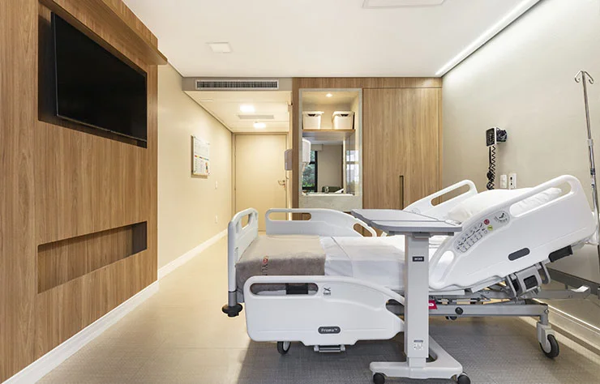
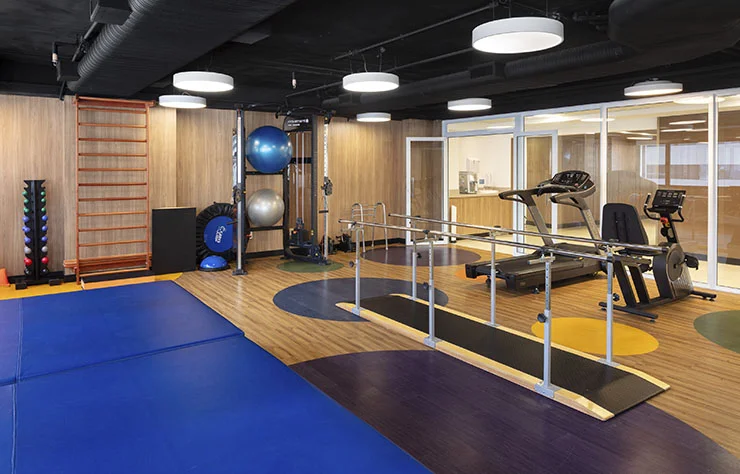
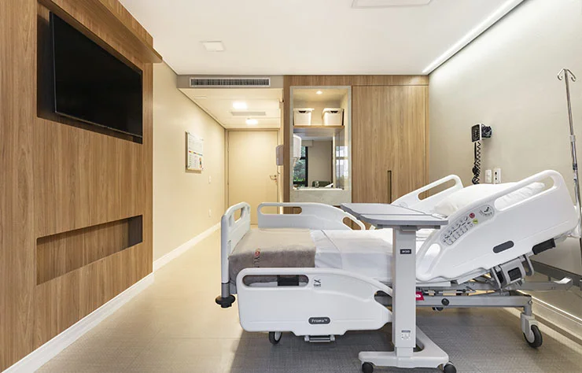
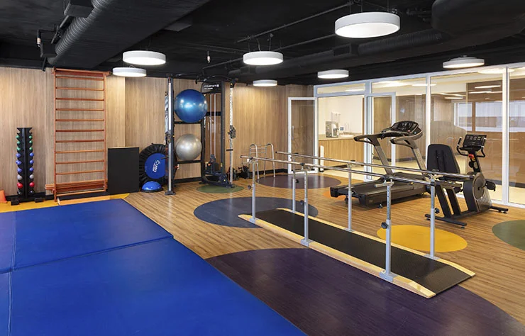
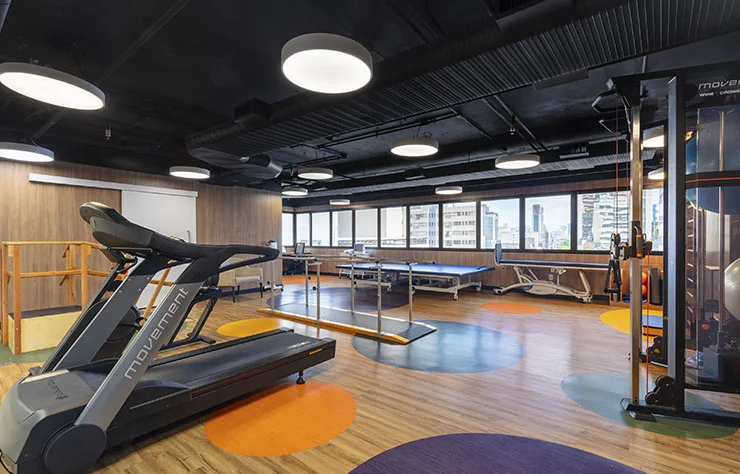
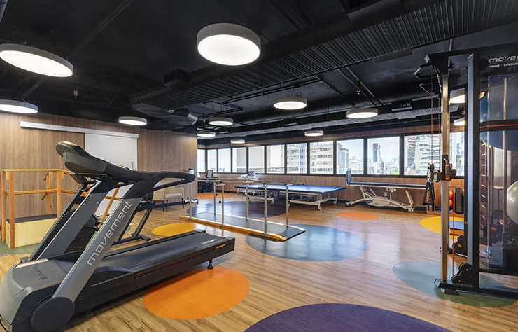
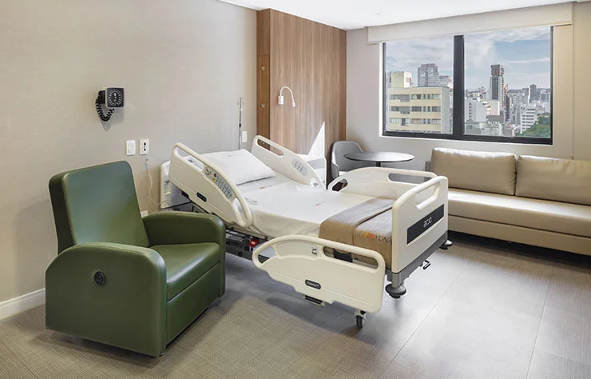
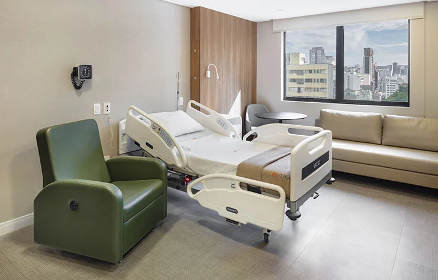
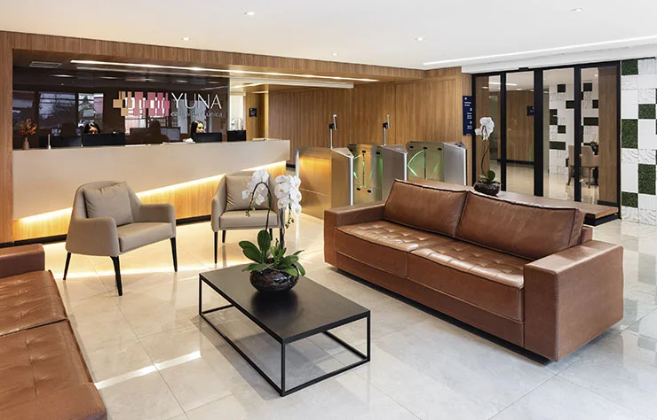
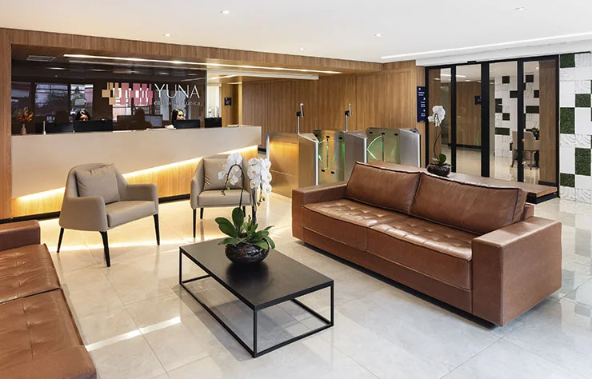

Nossa estrutura
100 suítes 22 m²
Centro de reabilitação
Laboratório de atividades básicas da vida diária
Solarium com horta e jardim sensorial
Espaço ecumênico e de meditação
Sala de estar e de atividades com a família
Estacionamento
 




 


 

 
